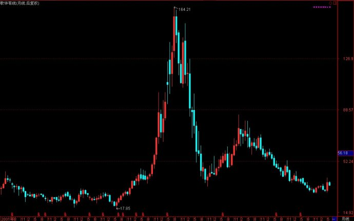

第349篇•怎样挖掘隐蔽资产股
——对我的第三期《投资者说》节目补充解析
谷为陵
我今天下午去中央财金大学为一个股票期货培训机构做了一个报告，题目是《股票操作的道与术》，谈了股票操作中的战略与战术问题，以后有时间我可以在博客中再谈一下这个问题。上周五晚上北京电视台财经频道《投资者说》栏目播出了我六期系列专题节目的第三期，其主要内容是挖掘隐蔽资产型强势股，或者说，是通过隐蔽资产挖掘强势股。
我第一次接触道隐蔽资产的概念，还是从彼得•林奇所著的《战胜华尔街》、《彼得•林奇的成功投资》这两本书中看到的。彼得•林奇将股票分为了6种类型，其中就有一种是隐蔽资产股。我看了一下，彼得•林奇在书中谈论隐蔽资产总计不到四页纸，但却将隐蔽资产的主要含义都讲到了。但是，若将彼得•林奇所谈的隐蔽资产股与A股市场出现的一些隐蔽资产股对照进行分析与研究，就能发现两者还是很多不同之处的，我至少发现两点不同：一是美国的一些隐蔽资产的概念，不能照搬到A股市场；二是A股市场有很多重要的隐蔽资产类型，并未在彼得•林奇所讨论范围之内。
我举几个自己曾经经历过的案例，足以证明照搬彼得•林奇的经验是多么可笑。
第一个案例。彼得林奇曾谈到，他非常后悔当初没有多买一些Telecommunication公司的股票，这是一家有线电视公司，1977年它的股价是12美分，10年后上涨到了31美元，上涨了250倍。彼得林奇说：“我持有这家美国最大的有线电视公司的股票数量非常之少，主要原因是因为当时我没能认识到这家公司的真正价值。当时这家公司不仅收益少得可怜而且负债高得吓人，从传统的观点来看，有线电视并不是一项很有吸引力的业务，但是该公司的资产（表现为有线电视用户）的巨大价值却远远超过了这些负面的影响，所有了解有线电视业务的人本来都应该能够认识到这一点，我本来也应该如此。……15年前，对于购买有线电视特许经营权的公司来说，每一个用户的价值相当于200美元，10年前即过了5年之后上升为400美元，5年前即过了10年之后上升为1000美元，而现在每一个用户的价值竟高达2200美元。在这个行业工作的人们一直都十分了解这些数据的变化，因此每个用户的价值大幅上升并不是什么秘密的信息。随着每个有线电视用户的价值不断上升，Telecommunication公司拥有的数百万用户本身就是一笔价值巨大的资产。我想我之所以会错过这一切，是因为直到1986年我居住的镇上才安装了有线电视，而我家直到1987年才装了有线电视，因此我缺乏有线电视用户每年使用费总体上逐年大幅上升的第一手信息。”
我是在2003年看到这段话的，看完后，我几乎是惊呼了一声，为什么呢？因为我好像突然开悟了，就像阿基米德在洗澡的时候发现了浮力定律时高呼“Eureca”（我找到了）一样。彼得林奇所说的Telecommunication公司，在A股市场不就有一只一模一样的吗？那就是歌华有线呀！歌华有线具有Telecommunication公司一切特征，但比后者还更好——其坐拥北京而拥有更多的有线电视用户，处于绝对行业垄断地位，且一直盈利。彼得林奇说Telecommunication公司的最大价值，是体现为每一个用户的价值不断增长，在10年增长了10倍，致使股价上涨了250倍，我想，假若歌华有线也具有同样的行业特征，那么，随着每一个用户的价值不断增长，且随着用户数量的不断增长，歌华有线的股价在未来10年还不上涨100倍吗？这个想法太令人兴奋了，于是我就买进去了。我2003年买的时候是27元（后复权，下同），但到了2005年7月反而跌到了17元，直到2005年8月股价才回到27元，虽然该股在2007年8月股价达到了164元，比我当初的买价高出5倍，但在那轮大牛市中，随便一只有色金属股和券商股的涨幅都会超过20倍，歌华有线涨得实在算是肉的了。但该股更不可思议的走势还在后面，大家请看该股2001年至2013年的长期走势（月线后复权）图：

若按照后复权计算，该股目前的股价约为35元，只比我在2003年的买价27元高出30%。同样是有线电视运营公司，同样是10年的时间，彼得•林奇买的Telecommunication公司股价上涨了250倍，而歌华有线股价只上涨了30%。这是为什么？我到现在也搞不清楚。
我不知道有多少人是深入研究过彼得•林奇的，我开始对他也是非常推崇的，甚至有点膜拜的味道，但说实话，我根据彼得林奇的投资真经去指导实战，其结果却屡屡是东施效颦。还有两个例子也很可笑。
第二个案例。彼得•林奇曾说，要远离热门股，而关注非热门行业的非热门股，买入冷门行业的龙头股往往能够赚大钱。他曾买了一只生产地毯的股票，大赚了50倍。也是在2004年，我在A股找了大半天，终于找到一只符合他的选股条件的股票——瑞贝卡！这是一种专做假发的公司，但却是一个世界级的假发生产龙头企业，该公司的假发销往全球。这个行业很冷门，瑞贝卡又是龙头企业，且该股也不被人注意，它能够上涨多少倍呢？虽然该股在2006年至2007年的大牛市中上涨了12倍，但自2003年至今的10年的累计涨幅只有3倍。彼得•林奇所说的应该大涨多少倍的冷门行业的龙头股，其长期表现为何是这个德性呢？
第三个案例。彼得•林奇说，对于周期股，要在其市盈率高的时候买，而在市盈率低的时候卖。其理由是，周期股在股价最低的时候，往往是业绩不好的时候，甚至是亏损的，所以，市盈率是高的，但是，当周期股所属行业出现景气而致周期股大幅盈利后，即使股价上涨了，其市盈率也会迅速降低，其结果往往是在股价的顶部时，市盈率还是最低的。这看起来是非常符合逻辑的。我在2005年就是相信了彼得•林奇的话，而错失了抄底江西铜业的最佳时机。因为在2005年8月，江西铜业的股价是4元（不复权），而2005年的半年报是每股收益0.37元，其动态市盈率是约5.4倍，这个市盈率是不高的，甚至是很低的。按照彼得•林奇的说法，周期股应该是在低市盈率时卖出，而在高市盈率时买进，这个江西铜业的市盈率这么低，因此，就不应该是买进机会。当然，后来我看到了有色金属板块的那种非同一般地强势，我很快意识到彼得•林奇是错误的。事实上，当2007年10月，江西铜业的股价上涨到78元的最高价时，其动态市盈率达到了57倍。江西铜业的股价与市盈率的关系是，在股价低到4元的时候，市盈率是5.4倍，是“低股价-低市盈率”模式，在股价高到78元的时候，市盈率是57倍，是“高股价-高市盈率”模式，这也是典型的“戴维斯双击”模式——业绩增长，市盈率提高，这与彼得•林奇所说的周期股的“股价-市盈率”特征完全相反。
通过以上的三个案例，我就意识到，美国的投资大师们的经验只可借鉴，但绝不能迷信和照搬！只要你对他们产生迷信，那么，不仅会迷失自己，还找不到真理。所以，在对待隐蔽资产的问题上，我心里很清楚，虽然我是受到彼得•林奇的启发，但在A股市场的隐蔽资产问题与彼得•林奇遇到的有很大的不同。
比如，彼得•林奇在谈到隐蔽资产的类别时说：“这些未被华尔街注意到的（隐蔽）资产可能隐藏在金属、石油、报纸、专利品、电视台中，甚至隐藏在公司的债务中”。当然，彼得•林奇还谈到隐蔽资产也可以体现为房地产、土地。但是，在A股市场最常见的两类隐蔽资产类型——股权型隐蔽资产与存货型隐蔽资产，彼得•林奇却从没有提及。
假若当初彼得•林奇在书中谈到了存货型隐蔽资产，那么，我就会在2003年知道贵州茅台其实是一只最大的存货型隐蔽资产股，因为该公司当时每年只销售3000吨酒，但该公司却有数万吨酒因在产出的5年内不能勾兑为成品酒而必须作为原料存放在酒窖中，且是按照成本法而非现值计算价值的，这些存货的价值高于该公司当时总市值近10倍！这个秘密是被“股神”林园发现的，他就是在2003年大量买入的贵州茅台，最终大赚了近百倍。
假若当初彼得•林奇在书中谈到了股权型隐蔽资产，那么，我就会在2006年初首先关注辽宁成大和吉林敖东这两只低价的券商“影子股”——它们均为未上市的广发证券的最大股东。随着股市进入大牛市，券商股全部发疯，而这两只参股广发证券的隐蔽资产股的股价，最终上涨了40～50倍，涨得比真正的券商股还多，成为了那轮牛市最大的黑马！
看到这里，大家不要误会，以为我是在批判彼得•林奇，其实不然。我的本意是很清楚的，那就是彼得•林奇谈论的投资经验，是在美国股市的投资经验，并不是在中国的A股市场的投资经验，美国股市与中国股市是两个完全不同的市场，很多的规则与市场现象都不尽相同。还是那句话，我们可以借鉴，可以学习，但绝不能迷信，更不能照搬。也就是从那时开始，我才逐渐萌生出发展属于自己的、符合A股市场特点的投资方法的想法，并最终形成了强势股主升浪战法的理论和操作方法。